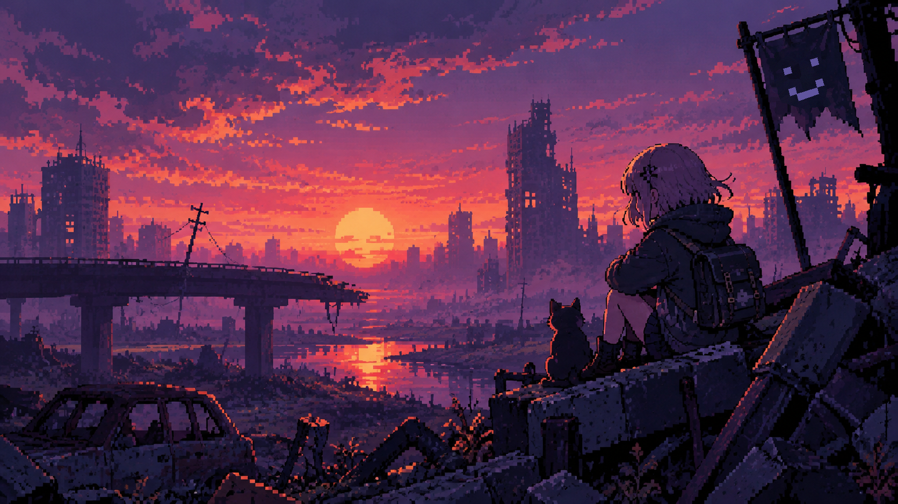

LOADING
水面にする領域をマウスドラッグで囲んでください
クリア
デフォルトに戻す
座標をコピー
完了 (M)
Archive
朝
夕
夜
雨
Dither
0%
PIXEL SCENE
黄昏の廃都
Dusk over the Ruined City
崩れた高架の向こうに沈む夕日。瓦礫に腰掛けた少女と黒猫が、静かに一日の終わりを見送っている。
T
時間帯
G
ドット切替
M
水面投げ縄
[ ]
ディザ調整
H
UI切替
Space
一時停止
S
画像保存